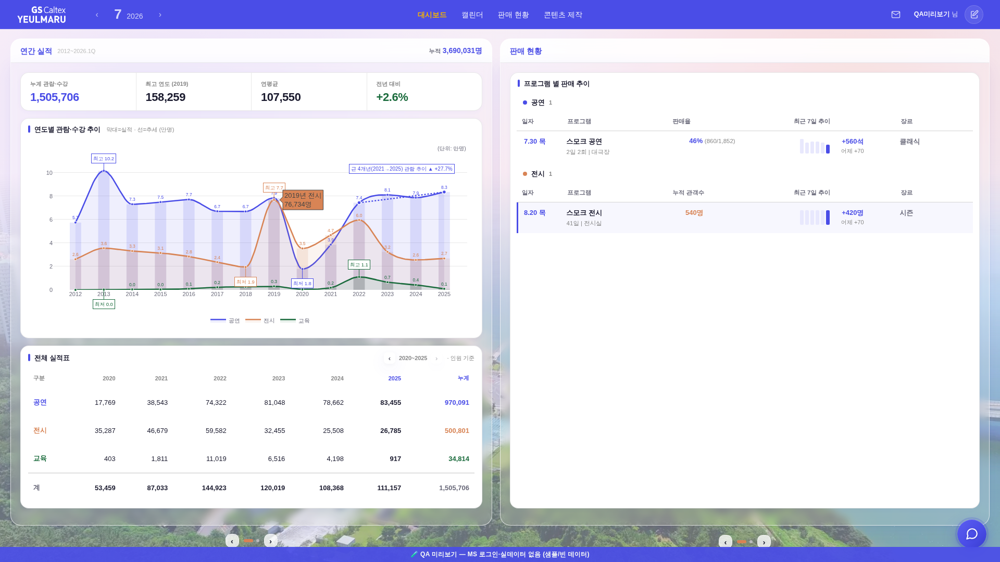
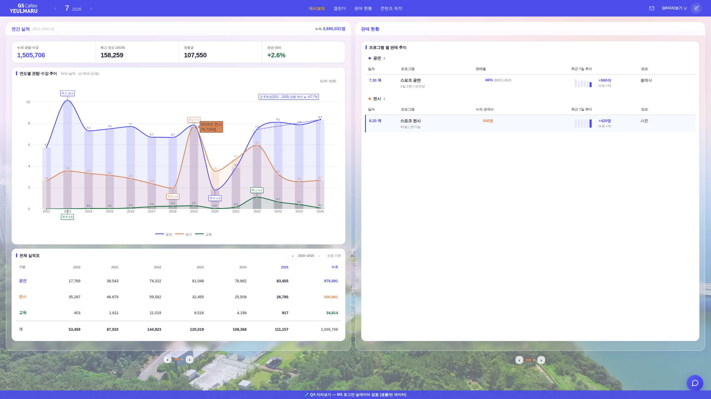
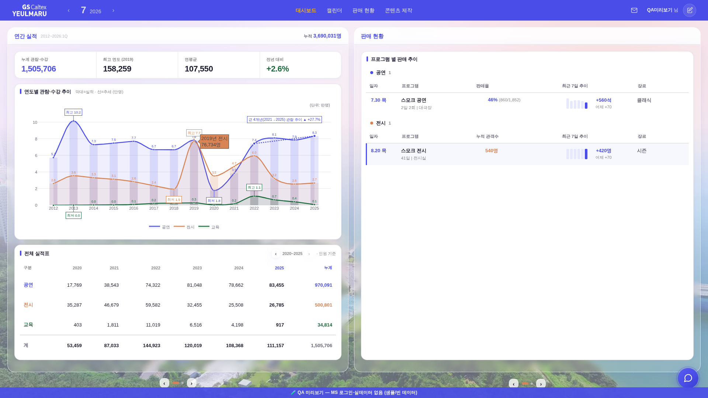
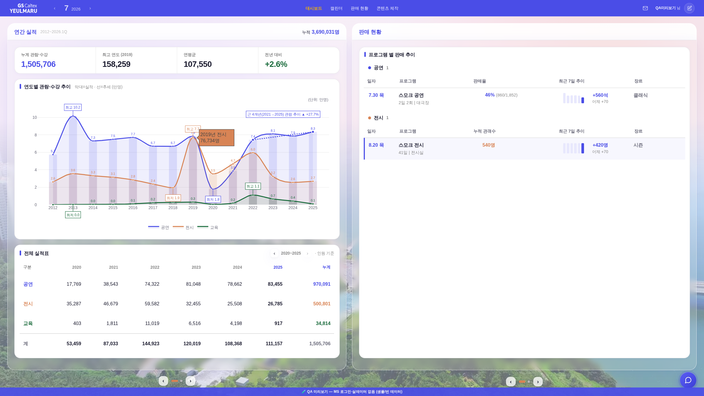

핵심 역전: 물리 픽셀로 차트가 80%에서 448px > 100%에서 383px — "확대(80→100%)하면 오히려 작아지는" 현상의 실체. 고정 px 규격(폰트·표 높이)과 뷰포트 비례 컨테이너(50% 폭)가 섞여 배율마다 구도가 달라졌다.
대시보드(biz 모드·레일 표시 폭)에서 #body-wrap에 CSS zoom = 뷰포트폭 ÷ 1920(클램프 .75~2.2)을 걸어
항상 1920 기준 디자인 공간에서 레이아웃하게 함(_bizZoomApply). 100% 화면 = z1 → 종전과 완전 동일(무변).
좌표계 실측(Chrome 141) 기반 보정 3종: ① gBCR(시각좌표)로 잰 값을 style px에 쓰는 정렬식 전부 _bizZ() 나눗셈(_bizFitViewport·_srailAlignTop biz 분기·행 하이라이트)
② min-height:calc(100vh−56px)는 zoom에 이중 스케일 → px 보정 ③ Plotly 포인터 좌표 줌 보정 심(_bizPlotlyZoomShim — z1.25에서 2019 지점 호버가 「2021년」으로 어긋나던 것 실측·수정).


| 요소 | 100% (w×h) | 80% 환산 (w×h) | Δw | Δh | 판정 |
|---|---|---|---|---|---|
| 연간 실적 보드 (#biz-main) | 925×978 | 925.0×989.0 | 0.0 | +11.0* | 일치 |
| 유리박스 (data-bizmbox) | 925×889 | 925.0×900.0 | 0.0 | +11.0* | 일치 |
| 차트 카드 | 887×423 | 887.4×438.2 | +0.4 | +15.2* | 일치 |
| 차트 (#yrm-chart) | 873×383 | 873.8×399.0 | +0.8 | +16.0* | 일치 |
| 전체 실적표 카드 | 887×313 | 887.4×310.0 | +0.4 | −3.0 | 일치 |
| 판매 현황 레일 박스 | 940×889 | 940.0×900.0 | 0.0 | +11.0* | 일치 |
| 진행 목록 (#rail-yrm-list) | 900×804 | 900.8×816.0 | +0.8 | +12.0* | 일치 |
* Δh 11~16px = 줌 밖 고정 nav(56px)가 배율마다 차지하는 디자인 공간이 달라져 생기는 구조적 몫(그만큼 차트가 흡수) — 폭·x축 기준선은 전 요소 Δ≤0.8px. 픽셀 상이율(80%를 1920으로 환산해 100%와 diff, Δ>30 기준): 전 11.96% → 후 4.65%(잔여 = 세로 11px 시프트·리샘플 노이즈). Plotly 호버 실측: 두 배율 모두 같은 지점에서 「2019년 전시 76,734명」 동일 표시(보정 전 80%는 「2021년」 오표시).
check_design ✓(hex 1605 무변·신규 토큰 0) · check_refs ✓ · smoke 로그인 ✓ · smoke:align(분야 표 틀 통일) ✓